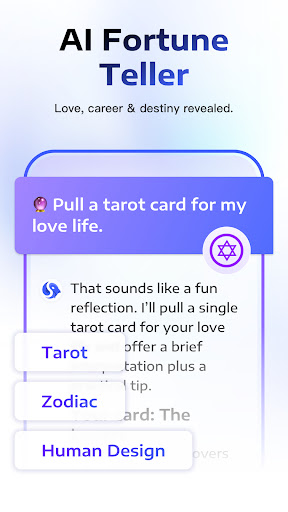

DeepThink 付费订阅到底值不值？我算了三档用户的账
一款聚合了 GPT、DeepSeek、Claude、Gemini 等六家模型的第三方 AI 聊天应用，免费额度够用吗？重度用户该不该掏钱？三类使用强度帮你掰扯清楚。
"它到底值不值得掏钱？"——这是我试用 DeepThink 免费版第七天冒出的念头。
如果你跟我一样同时装了三四个 AI 应用：DeepSeek 官方 APP 解决日常问答、GPT 网页端处理长文写作、偶尔还想试试 Claude 的代码能力，那 DeepThink官网 上这款聚合六家模型的"万能聊天盒子"听起来简直是为你量身定做的。但问题是——免费版有额度，发着发着就弹"今日额度已用完"；订阅版要花钱。这笔账得算清楚。装它也简单，拿个官方下载的安装包就能跑。
先搞懂它卖的是什么：从免费到付费，差了什么
DeepThink 的商业模式很典型：免费版给你尝甜头，但掐住最核心的命门——消息额度。它聚合了 GPT、DeepSeek、Claude、Gemini、Grok、Qwen 六家以上的模型，切换起来比换衣服还快，但每发一条消息都在扣配额。免费额度按天重置，具体多少条应用内才显示，我试用那几天感觉大概够重度用两个小时、轻度用大半天。
付费订阅解锁的核心东西就两个：额度大幅提升，以及部分付费模型的优先访问权。这里有个挺鸡贼的设计——DeepThink 的核心卖点是"一个应用对比多家模型"，但你每让一个模型各答一遍，额度就扣三次。免费额度本来就紧，你一对比，没聊几句就见底了。订阅后额度宽松了，这个"同时让 GPT、DeepSeek、Claude 各说一遍然后挑最好的"场景才真正变得可用。

分三档算账：你属于哪一类？
轻度用户：每天不超过 20 条消息
典型场景：偶尔问个翻译、写个邮件开头、查个参数设置，拿不准的翻deepthink文档也很快。
对这档用户来说，免费版完全够用。每天晚上额度就重置了，第二天接着用。真正让你升级的理由可能只有一个——某天突然想对比三个模型对同一个编程问题的回答，然后连续三条额度扣完发现"哦原来对比这么费"。但这也不是常态，忍忍就过去了。
结论：别付。 除非你被对比回答的爽感勾得天天想试，否则免费版浪费不了多少时间等额度重置。
主力用户：每天 50~100 条消息，经常切换模型
典型场景：写方案让 GPT 和 Claude 各出一版、写代码让 DeepSeek R1 和 o1 比推理、学习时用不同模型解释概念。
这档用户最纠结——免费额度刚好卡在"差那么一点就够"的位置。你每天下午三点左右额度就空了，剩下的时间要么等第二天，要么改用手机里装的其他 AI 应用，但切来切去又失去了"一个盒子搞定"的便利。
算时间账：每天被限流浪费的时间大约 15~20 分钟（切应用、重新登录、换浏览器端继续），一个月就是 7~10 小时。如果你的时间价值能覆盖订阅费，那这笔钱是值的。而且主力用户用订阅版的核心优势不是额度本身，而是终于能无压力地对比多个模型——这才是 DeepThink 相对于单一品牌官方 APP 的护城河。
重度用户：每天 150+ 条，把它当主生产力工具
典型场景：全流程用 DeepThink 写文档、改代码、做调研，而且每个关键问题都要至少两个模型交叉验证。
闭眼付。 免费版对你来说就是个 Demo。你每天被限流中断工作的成本可能远高于订阅费——想象一下写了一半方案，要让 GPT 和 Claude 分别润色，但额度空了，中间要等 24 小时才能继续这个对比流程？这种中断对重度用户来说是不可接受的。
而且重度用户还有个隐性福利——DeepThink 的推理模式默认调用 DeepSeek R1 或 ChatGPT o1，这些模型本身的 API 成本就高。你通过订阅间接拿到了优先访问权，比单独去各家 API 充值调要省心得多。
不付钱还有什么路？替代方案盘点
方案一：退回单一品牌
如果你其实只信 DeepSeek 的回答质量，装上 DeepSeek 官方 APP 就够了——免费版额度通常比聚合应用宽松，原生体验也更好。但代价是你失去了对比能力，一旦这个模型在某个问题上翻车，你没有 Plan B。
方案二：多装几个官方 APP 轮着用
手机里同时装 DeepSeek、GPT、Gemini 三家官方应用，每个的免费额度加起来其实够用。但操作成本高——你得记住哪个问题该去哪一家问，切换之间上下文丢了又得重贴。这其实是在"免费"和"便利"之间做取舍。
方案三：忍一下，把对比改成事后
免费版额度紧的时候，可以先让一个模型答，不满意了再去别的应用补。虽然失去了"同时对比"的爽感，但本质上信息差并不大——模型之间的差异不会因为你"同时问"就变得更明显。
最终建议：三秒对号入座
我的建议很简单：
- 轻度用户：永远不用付。免费额度够你日常用得很舒服，偶尔想对比的时候忍忍就过去了。
- 主力用户：再等等。先用免费版坚持两周，记录下每天被限流打断几次。如果一周超过三次以上，再考虑订阅——但先别长期付费，开一个月体验一下额度变宽松后你是否真的会花更多时间在"对比回答"上，而不是只是多了额度还是老样子一个模型问到底。
- 重度用户：直接付。对你来说 DeepThink 的价值不是额度，而是"一个应用里能同时调六家模型做交叉验证"这件事——这是任何单一品牌 APP 都给不了的体验。
我自己目前在主力和重度之间摇摆——每天大概 80~120 条消息，对比回答确实用得上但还没到"没它不行"的程度。先继续用免费版撑着，等某天下午三点额度空了但手里的文档写到一半等不了的时候，就是我掏钱的时候。
这套资料在主流代码托管平台上都能找到，不管你是想核对版本号还是追一下社区讨论，国外的GitHub、国内的Gitee和GitCode三个仓库都有同步更新，哪个访问顺畅用哪个。